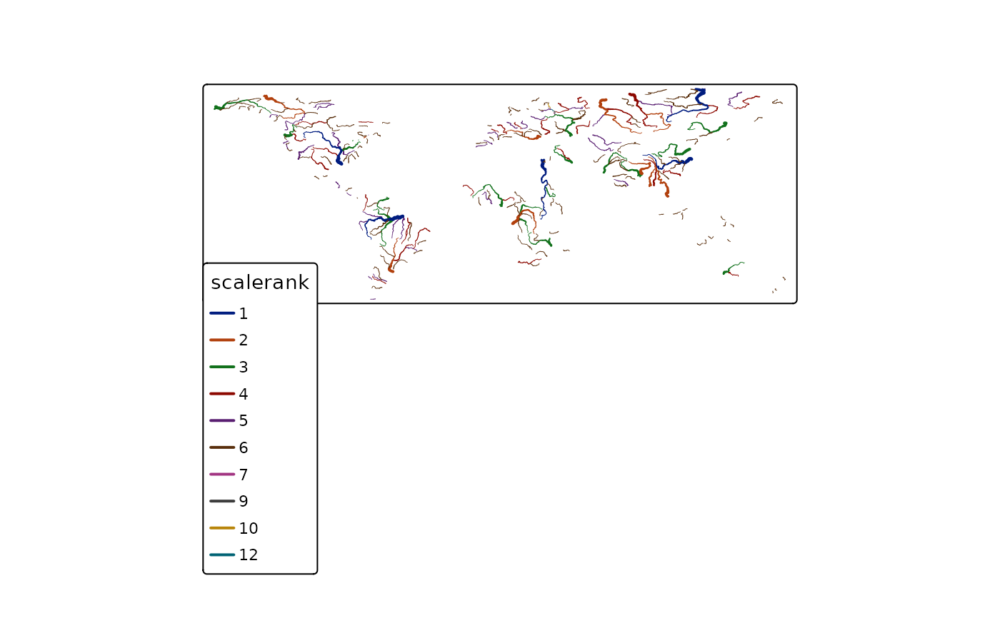

Creates a tmap-element that draw spatial lines.
tm_lines( col = NA, lwd = 1, lty = "solid", alpha = NA, scale = 1, lwd.legend = NULL, lwd.legend.labels = NULL, lwd.legeld.col = NA, n = 5, style = ifelse(is.null(breaks), "pretty", "fixed"), style.args = list(), as.count = NA, breaks = NULL, interval.closure = "left", palette = NULL, labels = NULL, drop.levels = FALSE, midpoint = NULL, stretch.palette = TRUE, contrast = NA, colorNA = NA, textNA = "Missing", showNA = NA, colorNULL = NA, title.col = NA, title.lwd = NA, legend.col.show = TRUE, legend.lwd.show = TRUE, legend.format = list(), legend.col.is.portrait = TRUE, legend.lwd.is.portrait = FALSE, legend.col.reverse = FALSE, legend.lwd.reverse = FALSE, legend.hist = FALSE, legend.hist.title = NA, legend.col.z = NA, legend.lwd.z = NA, legend.hist.z = NA, id = NA, interactive = TRUE, popup.vars = NA, popup.format = list(), zindex = NA, group = NA, auto.palette.mapping = NULL, max.categories = NULL, ... )
| col | color of the lines. Either a color value or a data variable name. If multiple values are specified, small multiples are drawn (see details). |
|---|---|
| lwd | line width. Either a numeric value or a data variable. In the latter case, the class of the highest values (see |
| lty | line type. |
| alpha | transparency number between 0 (totally transparent) and 1 (not transparent). By default, the alpha value of the |
| scale | line width multiplier number. |
| lwd.legend | vector of line widths that are shown in the legend. By default, this is determined automatically. |
| lwd.legend.labels | vector of labels for that correspond to |
| lwd.legeld.col | color of lines that are shown in the legend for the lwd aesthetic. By default, the middle color of the |
| n | preferred number of color scale classes. Only applicable when |
| style | method to process the color scale when |
| style.args | arguments passed on to |
| as.count | when |
| breaks | in case |
| interval.closure | value that determines whether where the intervals are closed: |
| palette | a palette name or a vector of colors. See |
| labels | labels of the classes |
| drop.levels | should unused classes be omitted? |
| midpoint | The value mapped to the middle color of a diverging palette. By default it is set to 0 if negative and positive values are present. In that case, the two sides of the color palette are assigned to negative respectively positive values. If all values are positive or all values are negative, then the midpoint is set to |
| stretch.palette | Logical that determines whether the categorical color palette should be stretched if there are more categories than colors. If |
| contrast | vector of two numbers that determine the range that is used for sequential and diverging palettes (applicable when |
| colorNA | color used for missing values. Use |
| textNA | text used for missing values. |
| showNA | logical that determines whether missing values are named in the legend. By default ( |
| colorNULL | colour for polygons that are shown on the map that are out of scope |
| title.col | title of the legend element regarding the line colors |
| title.lwd | title of the legend element regarding the line widths |
| legend.col.show | logical that determines whether the legend for the line colors is shown |
| legend.lwd.show | logical that determines whether the legend for the line widths is shown |
| legend.format | list of formatting options for the legend numbers. Only applicable if
|
| legend.col.is.portrait | logical that determines whether the legend element regarding the line colors is in portrait mode ( |
| legend.lwd.is.portrait | logical that determines whether the legend element regarding the line widths is in portrait mode ( |
| legend.col.reverse | logical that determines whether the items of the legend regarding the line colors sizes are shown in reverse order, i.e. from bottom to top when |
| legend.lwd.reverse | logical that determines whether the items of the legend regarding the line widths are shown in reverse order, i.e. from bottom to top when |
| legend.hist | logical that determines whether a histogram is shown regarding the line colors |
| legend.hist.title | title for the histogram. By default, one title is used for both the histogram and the normal legend for line colors. |
| legend.col.z | index value that determines the position of the legend element regarding the line colors with respect to other legend elements. The legend elements are stacked according to their z values. The legend element with the lowest z value is placed on top. |
| legend.lwd.z | index value that determines the position of the legend element regarding the line widths. (See |
| legend.hist.z | index value that determines the position of the legend element regarding the histogram. (See |
| id | name of the data variable that specifies the indices of the lines. Only used for |
| interactive | logical that determines whether this layer is interactive in view mode (e.g. hover text, popup, and click event in shiny apps) |
| popup.vars | names of data variables that are shown in the popups in |
| popup.format | list of formatting options for the popup values. See the argument |
| zindex | zindex of the pane in view mode. By default, it is set to the layer number plus 400. By default, the tmap layers will therefore be placed in the custom panes |
| group | name of the group to which this layer belongs in view mode. Each group can be selected or deselected in the layer control item. Set |
| auto.palette.mapping | deprecated. It has been replaced by |
| max.categories | deprecated. It has moved to |
| ... | these arguments are passed on to |
Small multiples can be drawn in two ways: either by specifying the by argument in tm_facets, or by defining multiple variables in the aesthetic arguments. The aesthetic arguments of tm_lines are col and lwd. In the latter case, the arguments, except for the ones starting with legend., can be specified for small multiples as follows. If the argument normally only takes a single value, such as n, then a vector of those values can be specified, one for each small multiple. If the argument normally can take a vector, such as palette, then a list of those vectors (or values) can be specified, one for each small multiple.
Tennekes, M., 2018, tmap: Thematic Maps in R, Journal of Statistical Software, 84(6), 1-39, doi: 10.18637/jss.v084.i06
